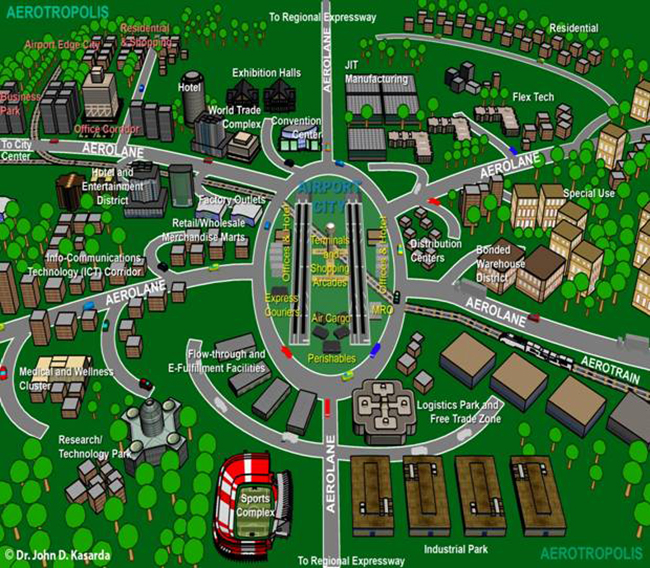

Reinforced Concrete
Infrastructure
Construction Drawings
Nijgadh International Airport
Planning and structural evaluation for Nepal’s proposed national-scale airport development, including analysis and design of a reinforced concrete cargo building, load evaluation, structural modeling, progress reporting, and drawing preparation.